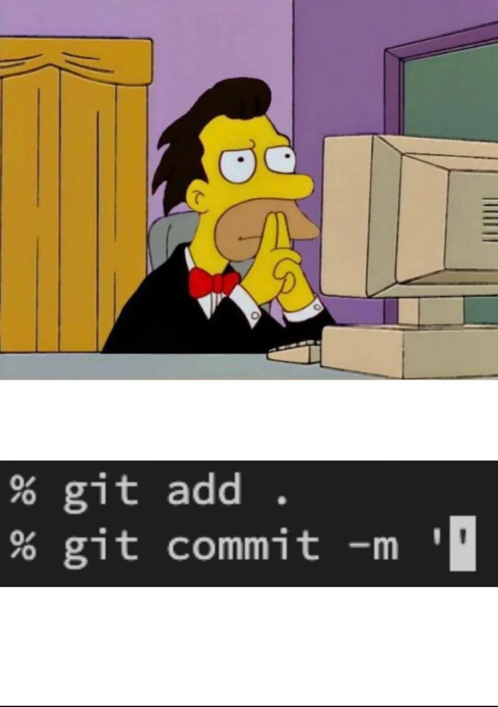
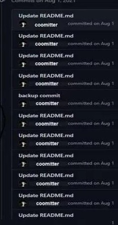

Sistemas de Control de Versiones de última generación
Fundamentos
¿Qué es un SCV?
¿Qué es un SCV?
Un SCV es un software que nos permite conocer información de la evolución y las modificaciones de nuestros proyectos.
Gracias a esto podemos:
- Mantener la última versión de los archivos que queramos.
- Volver a alguna versión anterior del software.
- Ramificar e integrar versiones de software con agilidad.
¿Qué es un SCV?
¡Un momento!
¡Todo esto lo podemos hacer a mano!

¿Qué es un SCV?
¿Qué aportan realmente los SCVs?
La gestión automática de los cambios que se realizan sobre el proyecto.
Restaurar cada uno de los ficheros a un estado de los anteriores por los que ha ido pasando.
Permitir la colaboración de diversos programadores en el desarrollo de un proyecto.
Un histórico de las acciones llevadas a cabo, cúando y por quién… útil cuando colaboramos muchos.
¿Qué es un SCV?
¿Cuántos SCVs conocéis?
Terminología general de SCVs
Repositorio
Es la copia maestra donde se guardan todas las versiones de los archivos de un proyecto.
Copia local
La copia del repositorio en cada computador. Cada desarrollador tiene la suya propia.
Copia de trabajo
El proyecto que el desarrollador utiliza para trabajar.
Terminología general de SCVs
Importante
Aunque la copia local y la copia de trabajo puedan parecer lo mismo, no lo son. Los desarrolladores hacen cambios en la copia de trabajo, pero éstos no tienen por qué registrarse en la copia local.
Terminología general de SCVs
Check Out
La acción empleada para obtener una copia de trabajo desde el repositorio.
Check In
La acción empleada para llevar los cambios hechos en la copia de trabajo a la copia local del repositorio
Terminología general de SCVs
Nota
¿Cómo se llama a estos términos en git?
Terminología general de SCVs
Push
La accion que traslada los contenidos de la copia local del repositorio de un programador a la copia maestra del mismo.
Update/Pull/Fetch&Merge/Rebase
Acción empleada para actualizar nuestra copia local del repositorio a partir de la copia maestra del mismo, además de actualizar la copia de trabajo con el contenido actual del repositorio local.
Terminología general de SCVs
Rama
Representa una línea de evolución de nuestro software. Podemos tener todas las que queramos, pero normalmente una es especial: trunk, master/main, etc…
Fusión de ramas
Acción de juntar los históricos de dos ramas.
Terminología general de SCVs
Conflicto
Situación que surge cuando dos desarrolladores hacen un check-in con cambios en la misma región del mismo fichero. Suele darse en la fusión de ramas. El scv lo detecta, pero es el programador el que debe corregirlo.

Tipos de SCV
Por la forma de almacenar contenidos:
Centralizados: Hay un único repositorio compartido por todos los desarrolladores. Sólo un responsable o grupo de responsables pueden llevar a cabo tareas administrativas en este repositorio. Por ejemplo:
CVSySubversion.Distribuidos: Cada usuario tiene su propio repositorio. Los repositorios de todos los desarrolladores del proyecto pueden intercambiar información. Es habitual disponer de un repositorio central para sincronizar a todos. Por ejemplo:
git,mercurialobaazar.
Tipos de SCV
Por la forma de modificar los contenidos de la copia local:
Colaborativos: Varios desarrolladores pueden estar modificando el mismo fichero simultáneamente. Puden aparecer conflictos por modificar varios desarrolladores la misma parte del archivo.
Exclusivos: Sólo un desarrollador puede estar modificando un archivo a la vez, el resto sólo pueden leerlo. Una vez se han pasado los cambios al repositorio entonces ya lo puede modificar otro desarrollador, pero nuevamente sólo uno. Ejemplos:
RCSoSourceSave.
¡Suficiente teoría! ¡Vamos con Git!
Git good at Git
Por si aún no te has enterado…
Linus Torvalds
Inventó giten 2005
Por si aún no te has enterado…
Linus Torvalds
Inventó giten 2005
Fue consciente de que si git era fácil de usar, nos haría blandos. Así que eligió forjarnos en el fuego de la confusión y el dolor.
Un poquito de historia
Los desarrolladores del kernel de linux emplean BitKeeper hasta 2005.
Linus comienza el desarrollo de
gitel 3 de abril de 2005 y lo anuncia el dia 6 de abril.Gitse auto-hospeda el 7 de abril de 2005.Surgen herramientas para alojar repositorios remotos: GitHub, Bitbucket, GitLab…
Actualmente, es el SCV más importante del desarrollo de software.
Conceptos básicos de git
Toda la metainformación de git se guarda en un directorio que reside en la carpeta raíz de nuestro proyecto, el .git:
.git
|-- branches
|-- COMMIT_EDITMSG
|-- config
|-- description
|-- FETCH_HEAD
|-- gitk.cache
|-- HEAD
|-- hooks
|-- index
|-- info
|-- logs
|-- objects
|-- ORIG_HEAD
+-- refsConceptos básicos de git
No hace falta que explique cómo añadir ficheros a un commit y cómo insertarlo … ¿no?

Conceptos básicos de git
No hace falta que explique cómo añadir ficheros a un commit y cómo insertarlo … ¿no?
Conceptos básicos de git
No hace falta que explique cómo añadir ficheros a un commit y cómo insertarlo … ¿no?
Conceptos básicos de git
Sin embargo, ¿sabías que los commits tienen una cabecera y un cuerpo?
Tip
El primer -m de un commit es el título (cabecera). Si añadimos más -m, éstos se añadirán al cuerpo del commit.
Conceptos básicos de git
Por ejemplo:
Conceptos básicos de git
Por ejemplo:
commit d3fdbef9cb466c26635a21f7c551bc3efaa49097 (HEAD -> master)
Author: antoniorv6 <ariosvila@gmail.com>
Date: Mon Dec 8 11:56:54 2025 +0100
feat: unify exception handling
Create a new exception handler that deals with all error cases in a unified manner. This change simplifies the control flow and makes error handling more predictable.Conceptos básicos de git
¡También nos podemos saltar la secuencia de add y commit!
Conceptos básicos de git
Sin embargo, a veces nos equivocamos haciendo un commit (mensaje mal escrito, nos hemos dejado ficheros por incluir, etc).
¿Cómo lo solucionamos?
Conceptos básicos de git
¿Haciendo un commit con el mismo mensaje?

Conceptos básicos de git
Git commit amend
git commit --amend "<mensaje>"
Git actualiza el commit anterior con el nuevo mensaje o los nuevos ficheros, no crea un nuevo hash.
Conceptos básicos de git
Estos cambios siempre se aplican al commit anterior.
Advertencia
¡Cuidado! Esto funciona si el último commit que se modifica no está subido al repositorio general. En caso contrario, no funcionará.
Sobre la actualización 2.23
Much@s, durante vuestra carrera, habréis aprendido que existe un comando muy famoso en git.
git checkoutSobre la actualización 2.23
¿Quieres deshacer los cambios de un fichero? git checkout
¿Quieres crear una rama? git checkout
¿Quieres cambiar de rama? git checkout
¿Quieres retroceder a una versión específica? git checkout
Sobre la actualización 2.23
En git 2.23 se introducen dos nuevos términos para desabusar el término checkout.
git switchpara crear y moverse entre ramas.git restorepara deshacer cambios en los ficheros.
Sobre la actualización 2.23
Nota
El término checkout no se ha retirado de estas funcionalidades. Sin embargo, se recomienda migrar a esta nueva terminología para evitar confusiones y problemas.
Un poco más sobre el reseteo en git
git restore nos permite eliminar cambios que hemos hecho en un fichero fuente. Es decir, volver al estado del proyecto en el hash actual.
Estos cambios se resetean si no están en el pre-stage para meterse dentro de un commit.
Un poco más sobre el reseteo en git
Importante
Importante, git restore no borra los ficheros que se han creado, aún no se hayan introducido en un staging o commit. Para gestionar esto, deberemos de usar el comando de git clean.
Un poco más sobre el reseteo en git
Si los cambios que queremos deshacer se encuentran ya en el staging o en un commit anterior…
Deberemos usar el comando git reset
Un poco más sobre el reseteo en git
Según usemos el comando git reset, obtendremos diferentes resultados:
git reset <fichero>: Eliminar un fichero del área de staging.git reset <hash>: Mover el HEAD del árbol de trabajo del repositorio a un commit pasado.
Un poco más sobre el reseteo en git
Un par de apuntes sobre git reset…
Existen tres modos de uso de esta acción.
git reset --soft: Mueve HEAD al, pero mantiene los cambios en el área de staging. git reset --mixed: Mueve HEAD y actualiza el área de staging para que coincida con el commit, pero deja los cambios en el directorio de trabajo.git reset --hard: Mueve HEAD y borra todos los cambios posteriores, restaurando el estado exacto del commit.
Un poco más sobre el reseteo en git
Advertencia
¡Mucho cuidado con el uso del --hard! Podrías perder todo el trabajo realizado
Ramas en Git
Ántes de crear ramas…
Debemos entender qué es el HEAD en git
El HEAD en git es un puntero que indica en qué lugar del árbol estamos trabajando ahora mismo. Entiéndelo como, en un mapa, el símbolo de “estás aquí”.
Ántes de crear ramas…
¿Por qué es importante el HEAD?
Porque muchas veces, los comandos de git simplemente trabajan modificando el HEAD en el repositorio.
¿Qué creías que hacía git checkout <hash> o git reset <hash>?
Sobre las ramas
Todos sabemos, hoy en día, qué es una rama.
Es una bifurcación en nuestro código. En realidad, creamos una “realidad paralela” por la que el HEAD puede navegar también.
Sobre las ramas
Para crear una rama, tienes dos opciones:
git checkout -b branch_name
o, si estás en la versión 2.23…
git switch -c branch_name
Sobre las ramas
Cómo se ve en el árbol…

Sobre las ramas
Tip
Una forma de visualizar el árbol es mediante git log. Sin embargo, hay que añadirle un poco de gracia. Prueba, a ejecutar git log --graph --decorate --oneline
Fusión de ramas
Fusión de ramas
La fusión de ramas es una operación muy común en git. A través de ella, juntamos los historiales de dos ramas.
Existen tres estrategias para fusionar ramas:
mergesquashrebase
Merge
El comando git merge es el más típico para fusionar ramas en git. Trata de juntar dos ramas en una a través de un punto de unión.
git merge <from>
Debemos interpretarlo como: Fusiona el último commit de esta rama con el commit en el que se encuentre el HEAD ahora mismo
Merge
Normalmente, esperamos que el HEAD se encuentre en el último commit de la rama que queremos fusionar.
Es decir, si queremos fusionar main con develop, por ejemplo, necesitamos asegurarnos de que el HEAD se encuentra en el último commit de main.
Merge fast-forwarding
git merge tiene dos comportamientos al fusionar las ramas.
Si la rama de origen está adelantada con la de destino y comparten el mismo historial, se realiza el fast-forwarding.
Fast-forwarding: Integrar diréctamente los commits de la rama fuente en la destino y hacerlos parte de su historia. Es decir, tratar los cambios como si la rama que se integra no hubiese existido.
Merge fast-forwarding
git merge tiene dos comportamientos al fusionar las ramas.
En caso contrario, se crea un commit intermedio para indicar un punto de fusión.
Tip
El fast-forwarding es una funcionalidad opcional. En algunos casos, como es el de Git Flow no conviene usarlo, incluso cuando puede ser usado. Para desactivar este atributo, se puede usar git merge --no-ff.

Rebase
Rebase permite reescribir la historia de commits moviendo, combinando o modificando commits existentes.
Antes del rebase:
C---D feature
/
A---B---E---F mainDespués del rebase:
C'--D' feature
/
A---B---E---F mainRebase
1. Rebase simple
Rebase
El modo interactivo de git rebase permite las siguientes acciones:
- pick: mantener el commit
- reword: cambiar el mensaje
- edit: modificar el commit
- squash: combinar con el anterior
- fixup: como squash pero descarta el mensaje
- drop: eliminar el commit
Squash
Squash combina múltiples commits en uno solo, ideal para limpiar la historia antes de mergear.
Antes:
* 3a2b1c0 Fix typo in documentation
* 9d8e7f6 Add more tests
* 5c4d3e2 Fix bug in login
* 1a2b3c4 Add login featureDespués del squash:
* 9x8y7z6 Add login feature with tests and docsSquash
1. Durante el rebase interactivo
2. Al hacer merge
Merge vs Rebase
Ventajas de merge
- Es más fácil de entender.
- Proporciona visión real de los cambios de la rama.
- No existen peligros graves, ya que el historial nunca se reescribe.
Merge vs Rebase
Desventajas de merge
- Su uso con frecuencia ensucia el historial de commits.
- Ralentiza implícitamente el proceso de clonado y pull, ya que aumenta la carga.
Merge vs Rebase
Ventajas de rebase
- Ayuda a limpiar el historial de commits y su legibilidad.
Merge vs Rebase
Desventajas de rebase
- Es más dificil de manejar.
- Reescribir el historial es peligroso, pueden borrarse cambios importantes.
- Se pierde información y algunos cambios pueden no entenderse a futuro.
Merge vs Rebase
¿Cuándo hacer merge y cuándo rebase?
Es una decisión plena del desarrollador… la experiencia manda.
Cherry-picking
¿Qué hacemos si queremos fusionar un commit específico en una rama?
Cherry-picking
git cherry-pick aplica cambios de commits específicos a tu rama actual.
Cherry-picking
Un caso práctico:
Herramientas pro de Git
Git stash
Imagina que estás trabajando en una rama
Has hechos muchos cambios (sin un commit aún)
Git stash
Imagina que estás trabajando en una rama
Has hechos muchos cambios (sin un commit aún)
De repente, un compañer@ te dice que debes actualizar el repositorio, que hay cambios importantísimos… y hay que hacerlo YA.
Git stash
git stash guarda temporalmente cambios no añadidos al árbol de trabajo. Se guardan dentro de una pila. Es especialmente útil cuando actualizamos el repositorio o debemos cambiar de rama sin hacer commit.
Git stash
Hemos visto la forma sencilla de realizarlo:
git stashguarda los cambios en la primera posición de la pila de guardado.git stash popaplica los cambios que se encuentren en la primera posición de la pila.
Git stash
Si queremos hacer varios stashes:
git stash save coolstuffguarda los cambios con la referenciacoolstuff.git stash apply coolstuffaplica los cambios que se encuentren en la referenciacoolstuff.
Git stash
Tip
No pasa nada si no te acuerdas de cómo se llaman los stashes que vas guardando en la pila de git stash, siempre puedes echar mano del comando git stash list para ver qué tienes.
Git stash
Cuidado con despistarse…
Git bisect
Un problema muy real
- El código funcionaba bien.
- Hicimos 100 commits sin ejecutar los tests.
- Los tests fallan.
- ¿Dónde narices introdujimos el fallo?
Git bisect
Un problema muy real
- El código funcionaba bien.
- Hicimos 100 commits sin ejecutar los tests.
- Los tests fallan.
- ¿Dónde narices introdujimos el fallo?
Git bisect
git bisect es un mecanismo de git que nos permite encontrar los commits que introducen fallos en nuestro código a través de una búsqueda binaria.
¿Recordáis qué es el algoritmo de búsqueda binaria?
Git bisect
git bisect es un mecanismo de git que nos permite encontrar los commits que introducen fallos en nuestro código a través de una búsqueda binaria.
- Premisa: tenemos un sistema para verificar si el código funciona o falla (¡LOS TEST!).
- En el primer extremo hay un commit que devuelve un resultado positivo (
good). - En el segundo extremo hay un commit que devuelve un resultado negativo (
bad).
Git bisect
Cumpliendo estas premisas, deberemos ser capaces de encontrar el commit que introduce la transición de good a bad en:
\(log_2(n)\)
Siendo \(n\) el número de commits que comprende la lista que investigamos. El resultado siempre se trunca.
Git bisect
Cómo proceder:
git bisect startGit bisect
Asumiendo que estamos en el último commit, marcamos dicho commit como bueno o malo (asumimos malo aquí):
git bisect badGit bisect
Ahora, movemos el HEAD al hash donde sabemos que los tests van bien y lo marcamos como bueno:
git checkout c1
git bisect goodAsumamos que el repositorio queda así y empezamos aquí:
✅ ? ? ? ? ? ? ? ? ❌
1 2 3 4 5 6 7 8 9 10Git bisect
En este momento, git bisect calcula cuál es el commit intermedio que debemos inspeccionar (y, aproximadamente, cuántas inspecciones nos quedan)
✅ ? ? ? ? ? ? ? ? ❌
1 2 3 4 5 6 7 8 9 10
↑
commit 5Git bisect
git bisect nos mueve el HEAD automáticamente a ese commit. Probamos y observamos que todo funciona bien. Por lo tanto, ejecutamos:
git bisect good
Pasamos a este estado:
✅ ✅ ✅ ✅ ✅ ? ? ? ? ❌
1 2 3 4 5 6 7 8 9 10Git bisect
Ahora toca inspeccionar, en este caso, el commit 7. git bisect nos mueve ahí. Ahora vemos que los test no funcionan. Por lo tanto, marcamos:
git bisect bad
Pasamos a este estado:
✅ ✅ ✅ ✅ ✅ ? ❌ ❌ ❌ ❌
1 2 3 4 5 6 7 8 9 10Git bisect
En este caso, solo nos queda probar el commit 6.
- Si da error, el commit culpable es el 6.
- Si no, es el 7.
Tip
Para ver los cambios del commit afectado, puedes usar git show.
Git bisect
Tip
Existen herramientas gráficas, como lazygit que ayudan a la gestión de este tipo de funciones.
Automatizaciones en git
¿Sabías que se pueden automatizar procesos dentro del flujo de Git?
Git Hooks
- Scripts automáticos que se ejecutan en momentos específicos del flujo de Git
- Permiten automatizar tareas y validaciones
- Se ejecutan localmente en tu repositorio
- ¡Son completamente personalizables!
Git Hooks
- Scripts automáticos que se ejecutan en momentos específicos del flujo de Git
- Permiten automatizar tareas y validaciones
- Se ejecutan localmente en tu repositorio
- ¡Son completamente personalizables!
Nota
Los hooks son una característica muy interesante para ejecutar automatizaciones en local de CI/CD.
Git Hooks
Por defecto, Git incluye ejemplos con extensión .sample:
Git Hooks
Los hooks se dividen en varios tipos
Client-Side
pre-commitprepare-commit-msgcommit-msgpost-commitpre-rebasepost-checkoutpre-push
Server-Side
pre-receiveupdatepost-receivepost-update
Git Hooks
Por lo general, son comandos shell-script:
Git Hooks
Tip
Existen algunas herramientas, como husky en node.js, que automatizan el proceso de uso y desarrollo de hooks.
Desarrollo Colaborativo de Aplicaciones